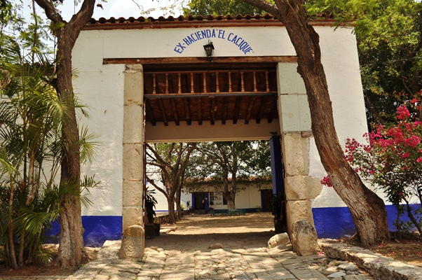
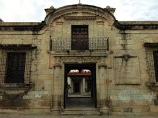

- Historia
Museo Comunitario de San José El Mogote

Datos generales
Está ubicado en la ex hacienda de El Cacique, en un sitio donde se han realizado excavaciones arqueológicas desde 1964. Abrió sus puertas en 1986, con el objetivo de preservar y difundir el patrimonio cultural de la comunidad.
Entre las piezas arqueológicas que exhibe destacan una figura de jade del periodo Monte Albán II, pintada en cinabrio, y un brazero-efigie del periodo Monte Albán I, también pintado en cinabrio, conocido como Diablo enchilado.
La sala histórica exhibe fotografías proporcionadas por miembros de la comunidad y una maqueta que recrea las condiciones de la hacienda a principios del siglo XX. La sala de lucha por la tierra incluye fotografías, documentos y genealogías de las familias solicitantes de las tierras.
Fecha de fundación
1 de enero de 1986
Tamayo

Ubicación: Calle Morelos, Oaxaca de Juárez.
Descripción: El Museo Rufino Tamayo alberga una impresionante colección de arte prehispánico que el propio artista oaxaqueño Rufino Tamayo reunió a lo largo de su vida. El museo está ubicado en una casona colonial y se enfoca en mostrar la estética del arte precolombino.
Museo de los Pintores Oaxaqueños (MUPO)
 Ubicación: Calle Independencia, Oaxaca de Juárez.
Descripción: Dedicado a promover y difundir el trabajo de los pintores oaxaqueños, el MUPO ofrece exposiciones de artistas tanto emergentes como consolidados. Es un espacio clave para entender el arte visual contemporáneo en Oaxaca.
Claro, aquí tienes el texto estructurado en código HTML:
```html
Ubicación: Calle Independencia, Oaxaca de Juárez.
Descripción: Dedicado a promover y difundir el trabajo de los pintores oaxaqueños, el MUPO ofrece exposiciones de artistas tanto emergentes como consolidados. Es un espacio clave para entender el arte visual contemporáneo en Oaxaca.
Claro, aquí tienes el texto estructurado en código HTML:
```html
Ubicación
El museo está ubicado en la ex hacienda de El Cacique. Esta es una región en la cual se han realizado excavaciones arqueológicas desde 1964, lo que indica su importancia histórica y cultural.
Apertura y objetivo
El museo abrió sus puertas el 1 de enero de 1986. Su objetivo principal es preservar y difundir el patrimonio cultural de la comunidad local. Este enfoque en la preservación y difusión cultural destaca la intención de la comunidad por mantener y compartir su historia y tradiciones.
Piezas arqueológicas destacadas
Figura de jade del periodo Monte Albán II: Esta figura es una de las piezas más valiosas del museo. Está pintada en cinabrio, un mineral de color rojo brillante, lo que sugiere que tenía un significado ceremonial o ritual importante.
Brazero-efigie del periodo Monte Albán I: Conocido coloquialmente como "Diablo enchilado", esta pieza también está pintada en cinabrio. Los brazeros-efigie eran utilizados en ceremonias religiosas, y esta pieza en particular es un testimonio del arte y las creencias de la época.
Sala histórica
Esta sala presenta una colección de fotografías proporcionadas por los miembros de la comunidad local. Estas imágenes ofrecen una visión íntima y personal de la historia de la hacienda y sus habitantes. Además, se exhibe una maqueta que recrea las condiciones de la hacienda a principios del siglo XX, lo que permite a los visitantes tener una comprensión visual y tangible del pasado.
Sala de lucha por la tierra
Esta sala incluye una variedad de fotografías, documentos y genealogías de las familias que solicitaron tierras en la región. Este enfoque en la lucha por la tierra refleja las tensiones y los desafíos que enfrentaron las comunidades locales en su búsqueda de derechos y reconocimiento.
Fecha de fundación
El museo fue fundado el 1 de enero de 1986, consolidándose como un espacio dedicado a la preservación del patrimonio cultural y la historia de la comunidad desde entonces.
```